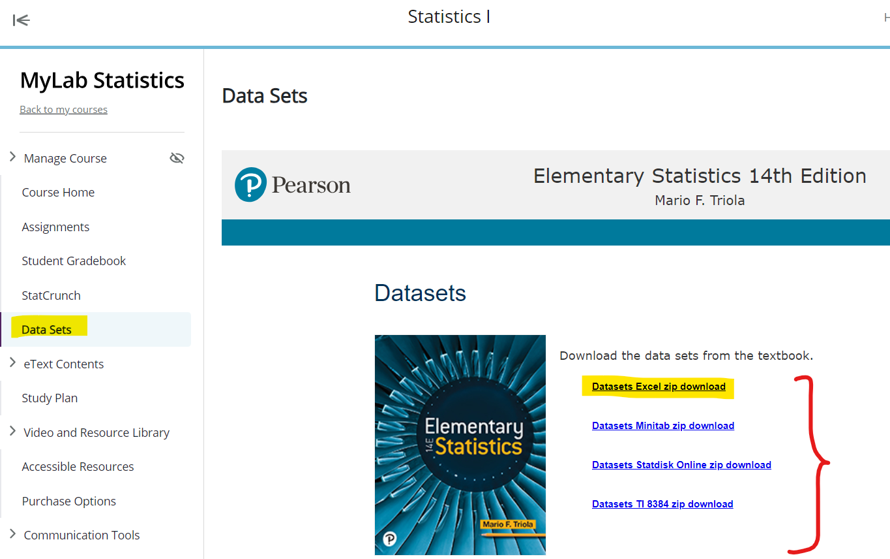
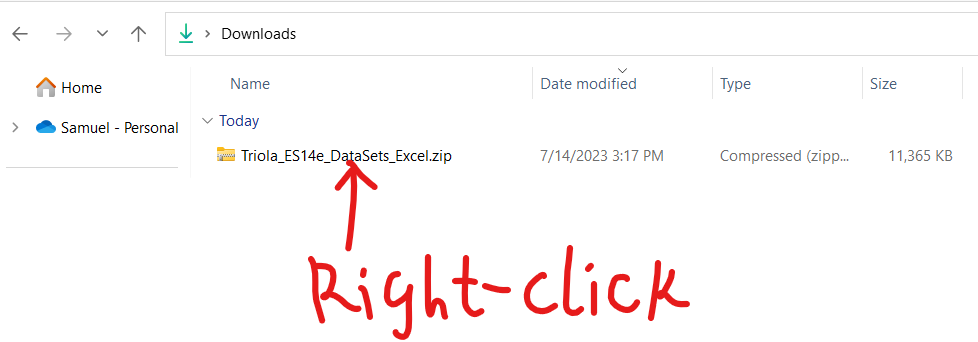
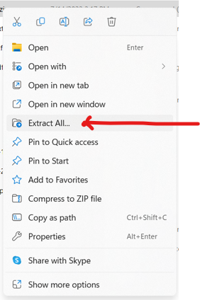
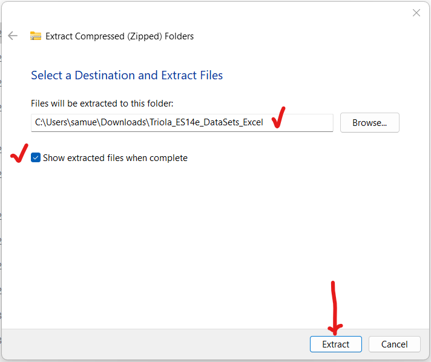
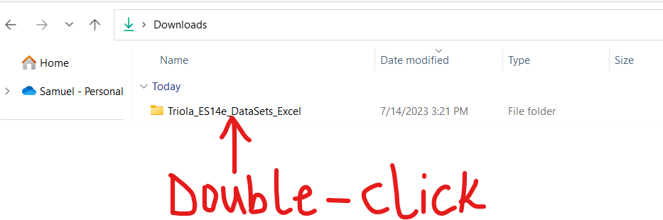
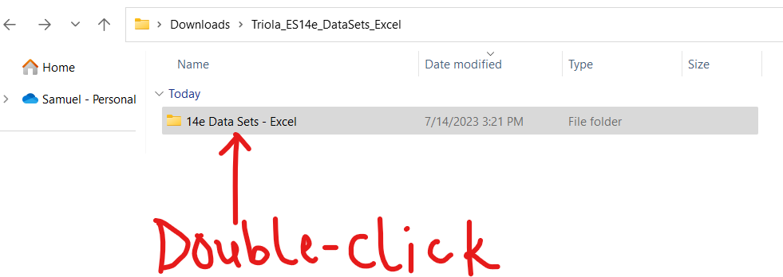

General Project Requirements
(1.) Data (Dataset): What dataset(s) should you use?
There are five approved ways to get the dataset(s).
Use any or combination of them.
(a.) RStudio Datasets:
You may use any of the applicable built-in datasets from RStudio.
(b.) Textbook (eBook) Datasets
You may use any of the applicable datasets from your eBook






(c.) MyLab Math (MLM) Datasets
You may use any of the
applicable datasets from your MLM assignments if the sample size is at
least 30. (
n ≥ 30)
(d.) Datasets from the U.S Government website:
United States
Government's Open Data: Datasets
You may use any of the
applicable open datasets from the U.S government.
(e.) Data Collection from my Students. (
This option is for onsite (traditional/in-class) students
only.)
Please see me in the Office during Student Engagement hours so we can discuss the data collection
methods and other requirements.
Any other dataset besides the ones mentioned should be pre-approved by me.
(2.)
Parameters
At least two parameters are required.
Please choose any two parameters.
If you choose to do more than two parameters, the best two would be used for your project grade.
The parameters to be estimated (Inferential Statistics) or tested (Hypothesis Testing) are:
(a.) Population Mean (Estimate or Test)
(b.) Population Proportion (Estimate or Test)
(c.) Population Variance (Estimate or Test)
(d.) Population Standard Deviation (Estimate or Test)
(e.) Correlation (Test)
The data values for the variable(s) could be from one sample or from more than one sample. Please ensure
you specify the number of samples.
Please review the examples/samples I did for you.
Inferential Statistics
(a.) Using Sample Mean to estimate Population Mean
(b.) Using Sample Proportion to estimate Population Proportion
(c.) Using Sample Variance to estimate Population Variance
(d.) Using Sample Standard Deviation to estimate Population Standard Deviation
Hypothesis Testing
(a.) Hypothesis Test about a Population Proportion
(b.) Hypothesis Test about a Population Mean
(c.) Hypothesis Test about a Population Variance
(d.) Hypothesis Test about a Population Standard Deviation
(e.) Hypothesis Test about a Correlation
Please
NOTE: For
any Hypothesis Tests, at least two approaches are required.
(3.) This is an individual project.
You may collaborate with one another. However, it is not a group project.
No two students should use the same dataset
and same variable(s) because there are many datasets
available for you.
I understand you are not Computer Science/Programming students. So, I spent time to write several notes
and codes on
R/RStudio.
Also, I provided you with several resources which I cited as references.
Be it as it may, I am here to help you. You have my number. Feel free to text me anytime. We can arrange
Zoom sessions so I share my screen and work you through any questions you have. Please do this as soon
as possible. Keep the due dates in mind.
(a.) Please submit the two datasets (names of the datasets including the sources) and at least two
parameters that you intend to estimate/test in the
Projects: Datasets and Parameters forum
in the Canvas course. I shall review and respond.
(b.) Once I give you the approval, please send your draft to me via email (if you prefer my review to be
seen by you alone) or submit your draft in the
Projects: Drafts forum in the Canvas course
(if you do not mind your colleagues reading my review). I shall review and respond.
(c.) When everything is fine (after you make changes as applicable based on my feedback), please submit
your work in the appropriate area (
Projects forum) of the Canvas course.
Only projects submitted in the appropriate area (
Projects forum) of the Canvas course are
graded.
Draft projects are not graded. In other words, projects submitted via email and/or in the
Projects: Drafts forum are not graded because they are drafts.
Submitting drafts is highly recommended. If your professor gives you an opportunity to submit a draft,
please use that opportunity.
Submitting drafts is not required. It is highly recommended because I want to give you the opportunity
to do your project very well and make an excellent grade in it.
(4.) (a.) The deliverables for the project draft are: Google Docs or Micrsoft Office Word containing the
minimum required information and clear screenshots of codes and results.
(b.) The deliverables for the project are:
(I.) Google Docs or Micrsoft Office Word containing the
minimum required information and clear
screenshots of codes and results.
(II.) The
R project folder (that contains all the files). Please use an appropriate name for the
project.
Zip the document and the folder and submit as a zip folder in the
Projects forum of the
Canvas course.
(III.) Please see an example guide for the required information.
You may choose to use a table format or other appropriate format that contains the
minimum
required information.
(5.) (a.) For the RStudio screenshots and RStudio settings, please set the font size in the editor to at
least 14. Also, use a transparent background (default
as is)
In other words, please do not change the theme. If you do need to change the theme, use a
light/transparent theme.
Change only the font size to at least 14.
(b.) As a student, you have access to Microsoft Office suite of apps.
(a.) You can download and install these apps on your laptop/desktop.
Please contact the IT/Tech
support in your college for assistance if you do not know.
You also have access to Google apps.
(c.) For all English terms/work (entire project): use Times New Roman; font size of 14; line spacing of
1.5.
Further, please make sure you have appropriate spacing between each heading and/or section as
applicable.
Your work should be well-formatted and visually appealing.

(d.) For all Math terms/work: symbols, variables, numbers, formulas, expressions, equations and
fractions among others,
the Math Equation Editor is required.
(i.) The font is set to Cambria Math by default (set it to that font if it is not); font size of 14, and
align accordingly (preferably left-aligned).
(ii.) To ensure appropriate spacing between your Math work, use a line spacing of 2.0.
Alternatively, you may use line spacing of 1.5 but insert a space after each equation as applicable.
Your work should be well-formatted, organized, well-spaced (not compact), and visually appealing.


(e.) Include page numbers. You may include at the top of the pages or at the bottom of the pages but not
both.

(6.) All work must be turned in by the final due date to receive credit.
Please note the due dates listed in the course syllabus for the submission of the draft and the actual
project.
In the course syllabus, we have the:
(a.) Initial due date for the Project Draft: Please turn in your draft.
(b.) Initial due date for the Project: If your draft is not ready for submission, keep working with me.
Make changes
based on my feedback and keep working with me until I give you the
green light to turn it in.
If you prefer not to turn in a draft, please review all the resources provided for you and do your
project well and
submit.
(c.) Final due date for the Project Draft: This is necessary if you want a written feedback for your
draft.
After this date, written feedback would not be provided for your draft. However, verbal feedback would
still be provided
during Office Hours/Student Engagement Hours/Live Sessions.
(d.) Final due date for the Project: All work must be turned in by this date to receive credit.
After this date, no work may be accepted.